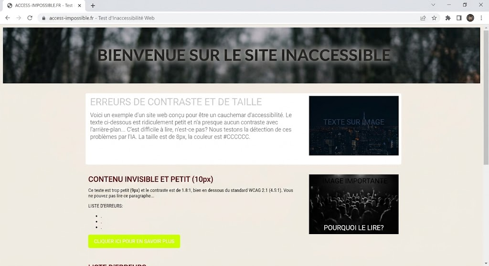

AccessiCode - Audit d'accessibilité
Cette page présente AccessiCode, une application qui aide à vérifier l'accessibilité des sites web selon les critères du RGAA.

L'illustration représente une page web structurée avec un titre, un contenu principal et des éléments correctement identifiés.
| Critère | Résultat | |
|---|---|---|
| Statut | Détail | |
| Structure | Conforme | Les éléments sont correctement structurés. |
Objectif de la page
L'objectif est de fournir une vérification claire et compréhensible des éléments d'accessibilité analysés.